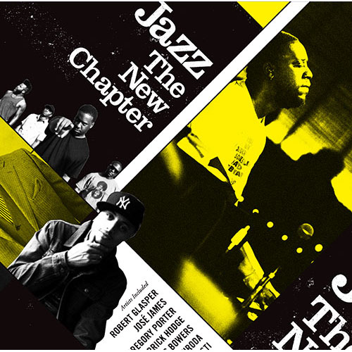
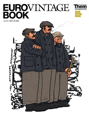

気がつけば割と多趣味なのかもと思います。
主だったものの紹介です。
音楽
いろいろ聴きますが、とくにJTNC (Jazz the New Chapter)系と、その源流とみなされる音楽が好きです。

※画像はUniversal Music Japanさまよりお借りしています。
台湾
電車で環島して以来すっかりハマり、ついには台湾華語まで勉強するようになりました。
本サイトのアイコン(右)のモチーフは、台北の象山から拝借しています。
旅の様子は下のnoteに書きました。
アイコンの元になった写真も中にあります。
象
象が好きなのも、象山がアイコンになっている理由です。
好きな理由はお鼻が長いからです。
とくにアジア象のフォルムが好みです。
※市原ぞうの国などちょこちょこ会いに行きます。
ユーロヴィンテージ
とある人の影響で買い始めたのがきっかけで、まあまあな量になってきました。
街で着られる実用的なもののみを集めています。
(なお、アメリカものもそこそこあります)

※画像はThem magazineさまよりお借りしています。
そのほか、飲食、写真、映画など。いったん、この辺にしておきます。